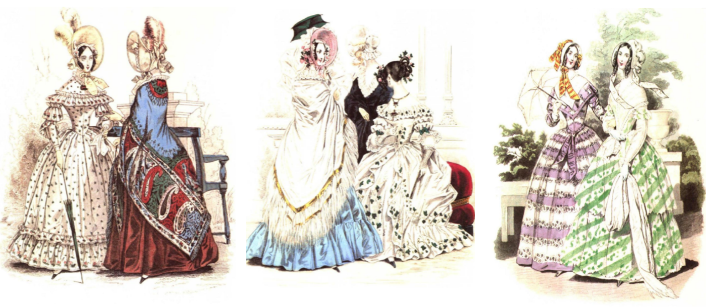

19. 未竟的旅程：当平等重塑外在秩序与内在心灵（本季完结）
大家好，我是杨照。
越民主的社会，经济发展动机就越大？
在上一集音频节目当中提到了托克维尔他观察到，财富在美国有着很不一样的意义。这事实上是当时从法国，尤其是曾经有过的这种贵族社会推演所看到，当时正在发展当中的资本主义社会，我们今天对这样的一个现象就变得非常的熟悉了。
在美国与已经受到同样的观念影响的全世界许许多多的社会当中，财富是以更深刻、更根本的精神方式被嵌入在感情结构里，也就并不单纯只是从世俗现实的层面来看待、来追求财富。财富牵涉到平等，同时财富也就牵涉到在相对平等的条件底下，人能够取得的成就。
有的时候也就倒过来，财富决定了你是一个什么样的人，决定了在一个平等的环境中，你究竟自己有多少的努力，因而你取得了什么样的成就。民主和平等刺激出不一样的经济动机，平等背后就必然附随着以个人为单位的集体评价。并不是看你拥有什么，而是看你自己创造出什么，来决定你在这个社会上的价值。
如果今天你有五千块，我也有五千块，但并不表示我们就获得社会同样的评价。如果在二十年前，我的父亲给了我一万块，而你一无所有，那么这个社会理所当然会给你比我更高的尊重。关键的算法是这二十年当中，我的财富成就是负五千，你是正五千，这中间相差了一万块。会有这样的算法，因为我们两人，作为个人，在这个社会的普遍眼光当中，是平等的，一种出发点平等的概念深植人心。
从这中间刺激出的强大经济动机，让每一个人都要依靠自己的努力去创造出财富来证明自己的价值。没有上帝信仰，没有基督新教当中的那种心理的紧张带来的焦虑，取而代之的是什么呢？是社会的评价系统，一个社会决定个人尊严的方式，人与人之间的地位比较，就持续给这个社会当中的个人带来了自我奋斗的压力。
这说明了民主、平等的社会，也就会有比较高的整体经济成就。在讲究、强调财富的社会当中，用来衡量财富与成就的工具，会集中、简化成为金钱、货币的数量。因为货币数字有一种无从否认的理性平等。在这里的一块钱到那里还是一块钱，在这里的一万块到了那里也仍然一定是多于一千块。清清楚楚，不需要争议，很容易掌握，也很容易衡量。我今天拥有的一百块，明天变成一百五十块，那就表示我的人生走了对的方向；相反地，如果是从一百块钱变成了六十块，那我就得要烦恼检讨了。
过去的不平等环境，地位高低有很多错综复杂的指标。看你的爵位高低，看你的交友范围，看你的宴客规模，看你的沙龙是不是能够找到肖邦或者是李斯特来演奏，看你的酒窖里都藏了一些什么样的美酒……这些因素都会影响你是谁、别人如何看你、如何和你互动。美国没有这些麻烦的指标，或说这些指标在平等化的过程当中失去了它原有的意义与分量，地位的指标就跟着平等化、单一化了，用金钱、财富来统括了一切、代替了一切。
在美国，金钱取得了之前没有的重要性。并不是说金钱可以买很多东西，可以换来很多享受，不单纯只是这个层面上的重要性。而是金钱变成了一股改造社会的巨大力量，将过去分属于不同范畴的事物价值，涵盖在同一个系统当中；让许多过去无法比较、很难比较的东西，变得可以比较的了。
简单说，价值就被转化成为价格。价值是多元的，价格却是单一、线性、高下立判的。一场有肖邦出席演出的沙龙，和两瓶1857年的红酒，有办法比较吗？如果我们讲的是价值，那无法比较；但如果说的是价格，那就变得可以比较，而且很好比较了。
本来苹果跟橘子该如何比？但是后来我们看到，经济学当中就有这样的一个统合的概念，叫做理性选择。理性选择的判断依据，其实也就是将苹果、橘子和所有的东西都转化在“供给-需求-价格”这个非常简单的公式底下。于是苹果、橘子和所有的东西都变得可以比较了。
金钱如此介入了之后，基本上，至少在理论上，所有的东西都是可以买的。既然所有的东西都可以买，那么我们人生最重要的一件事，也就顺理成章是：努力增加自己的purchasing power（购买能力）。
托克维尔他在书里面碰触到了这个问题，已经提出了这个讨论的议题——民主社会与经济发展之间的关系。越民主越平等的社会，经济发展动机就越强大吗？多年之后，这个议题仍然切近现实，仍然值得我们持续思考。
平等社会不再讲究礼仪与规矩
再下来我们又看到，《论美国的民主》下卷第三章讲的是民主所产生的manners，勉强翻译，是民主制度下人与人之间的基本对待礼仪。人与人之间互相对待的方式，在民主、平等的社会和在旧贵族制社会一定大不相同。
平等具有强大的感染力。活在一个平等社会的人，会相应改变他看待自己、看待周围他人、看待社会乃至于看待世界的眼光。这种眼光、态度表现在外，就是所谓的manners。
托克维尔写《论美国的民主》的时候，欧洲的manners 正在经历一段特殊的变化。英国维多利亚女王在1837年即位，要到1901年，她才去世离开她的王位。历史上通常将她在位的这段时期，特别称为Victorian Age（维多利亚时代）。维多利亚时代的一个表征，就是格外讲究manners，有很多繁复的礼仪与规矩。

维多利亚时代的女性服饰
不过早在“维多利亚时代”展开之前，托克维尔就已经看出美国与英国的巨大变化，预见了在manners 上，美国和英国会越走越远，差别越来越大。礼仪与规矩，主要是用来显现、界定人与人的关系的。人与人关系越清楚、越固定，礼仪和规矩也就越重要。
例如说，在学校里面，以前开始上课，学生一定要起立、立正、敬礼，那是学生必须遵守的礼仪规矩，因为那个时候学生和老师的关系很清楚、很确定。但今天的师生关系就变得没有那么固定，有着高度的多元流动性，所以起立、立正、敬礼，这样的礼仪就随而松动，乃至于消失了。
这背后，就是一个平等社会所带来的效应。上下关系、明确的身份区分、人与人关系的界限，模糊消失了，当然就影响了每一个人日常生活当中的manners，让礼仪和规矩不再那么严格。从姿态到语言，都会改变。相对地，例如敬语消失了，例如礼貌的套语消失了，固定的礼仪姿势消失了，取而代之的是每一个人都不太一样的互动行为和说话方式。
中国人最早去到美国，几乎没有一个不惊讶美国社会里儿子可以直接叫爸爸名字的。多么不可思议，儿子要爬到老子头上了！然而也有五四时代的新小说，年轻的儿子们以美国人能够平等、像叫朋友般叫爸爸的名字，感到万分羡慕，视之为梦想，为未来的理想。这里就显示了一个身份结构化社会和一个平等社会在manners上的根本差异。
人与人之间的身份规范松动了，相对地，社会也就越来越重视财富的表征，这是决定人与人关系的新准绳。因而就产生了前面提到过的：从反复的财富想象与练习当中而有了对于hypocritical of luxury（虚伪的奢华）的强烈追求，指的是在外表上，对待别人的态度越来越没有一定的规范，但是你穿挂在身上的东西却越来越重要。这也是民主、平等会带来的社会影响。
平等的扩张力量无法抵挡
民主是一种权利安排、一种政治关系，然而因应民主的安排，却会产生平等向外扩张的效果。平等不会停留在一个固定的范围，人在政治权利上获得了平等对待，这种平等经验就一定会蔓延扩展到其他不同生活领域里，平等不会停留在固定的范围里。
从政治上建立了平等的价值，也就很难停住平等不断扩大其管辖范围的脚步。托克维尔来不及看到，但我们可以在历史上看得清清楚楚的例子，那就是投票权的发展。美国最早发展出了不以财富来限制投票权的平等安排，不管你是穷人还是有钱人，只要你属于自由身份的男性，就能够得到平等的一票权利。
然而，投票权的平等也就不可能停留在这里，接下来就掀起了女性争取投票权的运动，如果财富不应该成为阻碍平等的障碍，那为什么性别可以？再进一步，那为什么种族、肤色可以？连带地，在这样的社会当中，就必然出现发自平等原则的质疑——为什么会有自由人和奴隶的巨大不平等存在呢？一步一步，旧的不平等被打破了，代之以范围越来越广的平等。
从这个角度来看，我们突然发现前面跟大家提过的，和托克维尔一起去美国的培蒙特，还真不应该就这样被遗忘、被忽视。大家可以回头听一下前面的节目，介绍佩蒙特他所写过的一部小说，他其实在这个小说当中比托克维尔更早、更深入处理了平等的进程。托克维尔是从政治制度切入，从民主谈起，到了下卷他才谈民主、平等的社会效果，但在培蒙特的小说中，却是先处理族群问题与性别问题，也就碰触到了平等的扩张性议题。
再说一次，平等不会停下它的脚步，不会依照设计停留在“我们这一屋子里的所有男人都平等”就算了。既然你主张所有的男人应该平等，平等的概念也就会自动延伸：那为什么女人不能取得同样的平等？如果进一步同意这一屋子里的女人，不分男女，都应该平等，自然就会有下一个问题：那为什么屋子里的人和屋外的人不平等？平等的延伸扩张力量，来自于它一旦成为一种正面的价值，会让所有的不平等现况，变成是需要说明、需要解释的，不再是天经地义、不再理所当然。这是平等内涵的改造与进步的动能。
平等不断地挑战许多过去认为不应该、不需要平等的事，平等的普遍性越来越高。托克维尔来不及见到，但到了我们的时代，已经建立了一种以全人类为范畴的平等主张，那就是“人权”。只要身为人，就该具备的基本权利，在“人”之外，没有任何其他资格区隔限制，“人权”之前，所有的人都是平等的。
托克维尔留给我们的大哉问
托克维尔一方面向我们报道了将近两百年前美国的实况，但绝对不仅止于“我到美国调查，看到了、听到了、了解了美国目前长这个样子”。不是的，他另外一方面回头去整理美国的来历，解释美国为什么会变成他笔下描述的这个样子。这里他清楚透露出一种羡慕与庆幸的心态：啊，美国真好，因为美国还那么年轻，还来得及让我们去追索它走过来的每一个脚印，在这里站起来，在那里转了弯，又在那里跌了一跤等等。
还不只如此，《论美国的民主》出版于1835年，但托克维尔的眼光，越过了1835年，投射到美国以及民主的未来。因为他扣紧了平等与民主的基本价值，弄清楚了这中间的逻辑关系，所以他也就取得了向前推论与预测的能力。他大胆却又细心地告诉我们：美国的民主继续发展下去会如何，会遇到什么问题，会扩大什么样的效果。他书里面的许多分析，不是现实的，是前瞻的、未来的。
托克维尔他的推论、预测，当然不可能全对。然而即使是他的错误，都饶富意义。他推论上的错误，大致分成两种。一种是逻辑上的错误，搞错或忽略了民主运作的一些环节互动。例如，托克维尔明白，美国的州不是法国的阿尔萨斯省，州政府与联邦政府之间的关系，不是阿尔萨斯省和法国中央政府之间的关系。他也在书里面仔细解释了各州的权力。然而他并没有深入说明州政府的组织与运作，尤其是忽略了美国各州彼此之间的差异。他只用了短短的一章，大略地带过州议会如何、州政府如何，中间没有细节。
托克维尔这方面的疏忽，有两个可能的原因。第一，他在美国接触到的人，大部分都是广义的知识分子（intellectuals），而不是实际参与政治、政治系统的人。这些人了解自己生活环境当中的地方状况，对乡镇与乡镇会议很熟悉，往往也熟读《联邦论》（Federalist Papers）这一类的建国文献，但相对和州政府疏离疏远，不太了解也不太关心。
还有第二个原因，或许托克维尔认为州政府是太独特的美国特色了，对于法国政治的启发、参考价值相对比较低。他不觉得法国的读者需要仔细了解法国所没有、看来也不可能形成的这种州政府形态。
然而正因为少了州政府运作的深入分析，托克维尔他就错估了州的权力与联邦权力之间消长的变化。他没有弄清楚将会有很强的力量把各州绑在联邦体系当中，各州其实没有那么容易选择离开联邦。联邦很早就发挥了巨大的经济、贸易功能。联邦内的各州，形成了“自由贸易区”，彼此之间有着自由、活跃的货物进出买卖行为，创造出共荣的经济状况。一个独立出去的州，必定遭到其他各州订定的关税壁垒，经济立刻就会陷入困境。联邦政府保障了各州之间不会有不平等的贸易、商业障碍，对各州都是极大的利益。
这是托克维尔没有在逻辑上弄清楚的部分。
另外一种错误，则源自托克维尔太专注于他的主题——美国的民主。所以他忘记了除了民主之外，美国还有很多其他的特色，还有很多其他的美国元素。单纯从民主制度面来看美国，托克维尔也就漏掉了后来美国发展上极为重要的一个环节，那就是美国社会当中具备的高度自我修正、自我修复能力。
托克维尔在书中表达了平等、民主社会的重大缺失，像是基础、无用的知识没办法生根发展，也无从出现精致的文字所写成的文学，也不会有必须依赖精英品味才能支撑的艺术。这是他的推论，是他从民主的逻辑推断出来的预言。
但美国有文学，托克维尔的书出版没有多久，美国开始有了霍桑（Nathaniel Hawthorne）、梅尔维尔（Herman Melville）这一辈的文学家，还有他们创作出来的杰出文学作品，像是《七角楼》、《白鲸记》。美国也有艺术。到了二十世纪，美国甚至成为全世界基础科学的头号重镇。这是托克维尔的书里面不可能解释的发展，但却是美国在二十世纪崛起的故事中，关键、也同样精彩的一段。
爱德华·霍普（Edward Hopper），《海边的房间》（Rooms by the Sea），1951
换句话说，托克维尔留下了一个大问题，让今天读他的书的人可以也应该认真思索：美国是如何自我修正，躲开了平等、民主从逻辑上带来的缺陷？这份庞大的修正力量，是如何产生、如何维持的？
也就用这个大问题留给大家，当作为大家解读《论美国的民主》的结语。当然，这个结语不是肯定的答案，而是留给我们更丰富、可以不断地思考、不断地探索，更进一步可以和当前现在的美国，还有当前现在我们自己的生活环境比对思考。这是问题的价值。
这期的公民课节目就为大家解说到这里。感谢您的收听，我们后会有期。